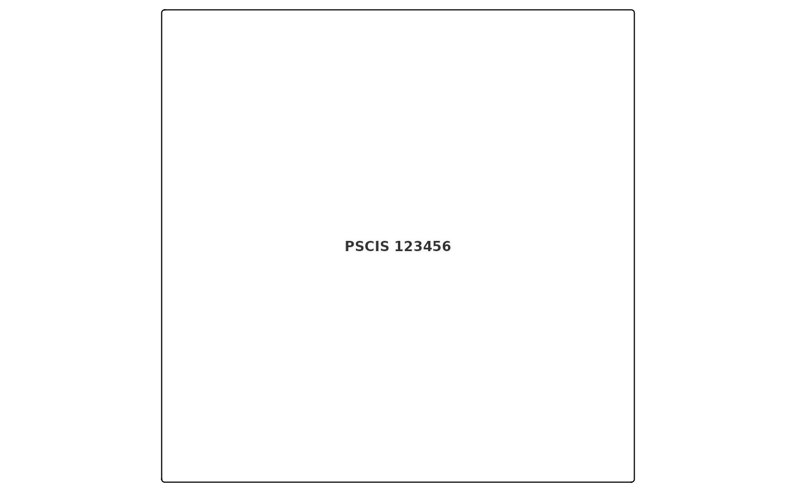

Returns tm_text() arguments that draw a layer's registry label: the
column, size, colour, weight and slant, along the line for a line label, and
a halo. Splice them in with do.call(), as gq_tmap_style() is used.
Arguments
- layer_or_reg
Either a layer entry from the registry (e.g.,
reg$layers$lake) or a full registry list when using name-based lookup.- name
Optional layer name for name-based lookup. Accepts
name_qgis_snake(e.g.,"lake") orname_qgis(e.g.,"Crossings - PSCIS assessment"). Normalized to match registry keys.- field
Optional column to label with. Required when the registry labels the layer with a QGIS expression (
label$expression), which tmap cannot evaluate: compute it as a column first. Also required for a label from the custom CSV, which names no column.
Value
A named list of tm_text() arguments: text, fontface and
options, and size, col, col_alpha, xmod, ymod where the
registry gives them.
Details
The halo is tmap's own (opt_tm_text(halo = TRUE), tmap 4.3 and later):
copies of the text in the halo colour drawn around it, which is a halo rather
than the offset copy of shadow or the box of bgcol.
Sizes follow QGIS: the registry holds the font size in points and the halo
width in millimetres, and tmap's text size = 1 is 12 points. tmap sets the
halo width in lines of text, so it is computed for the registry's size; a
size changed afterwards scales the halo with it. Line labels (placement
"line" or "curved") follow their line. QGIS's merge_lines and
min_feature_size are not applied here, because tmap places one label per
feature: dissolve by the label column and drop short features first, or a
river cut into segments is labelled once per segment. The registry's font
family is not passed, since QGIS's fonts are rarely installed where R
renders.
Examples
reg <- gq_reg_main()
# Lake names: the gnis_name_1 column, 10 pt italic, with a halo
str(gq_tmap_labels(reg, "lake")[c("text", "size", "col", "fontface")])
#> List of 4
#> $ text : chr "gnis_name_1"
#> $ size : num 0.833
#> $ col : chr "#1f78b4"
#> $ fontface: chr "italic"
# The registry labels PSCIS crossings with a QGIS expression, so tmap needs
# the label as a column
reg$layers$crossings_pscis_assessment$label$expression
#> [1] "concat( 'PSCIS', ' ', \"stream_crossing_id\" )"
if (requireNamespace("tmap", quietly = TRUE) &&
requireNamespace("sf", quietly = TRUE)) {
lakes <- sf::st_sf(
gnis_name_1 = "Tachick Lake",
geometry = sf::st_sfc(sf::st_point(c(1200000, 1000000)), crs = 3005)
)
tmap::tm_shape(lakes) +
do.call(tmap::tm_text, gq_tmap_labels(reg, "lake"))
crossings <- sf::st_sf(
stream_crossing_id = 123456,
geometry = sf::st_sfc(sf::st_point(c(1200000, 1000000)), crs = 3005)
)
crossings$label <- paste("PSCIS", crossings$stream_crossing_id)
tmap::tm_shape(crossings) +
do.call(tmap::tm_text,
gq_tmap_labels(reg, "crossings_pscis_assessment", field = "label"))
}
